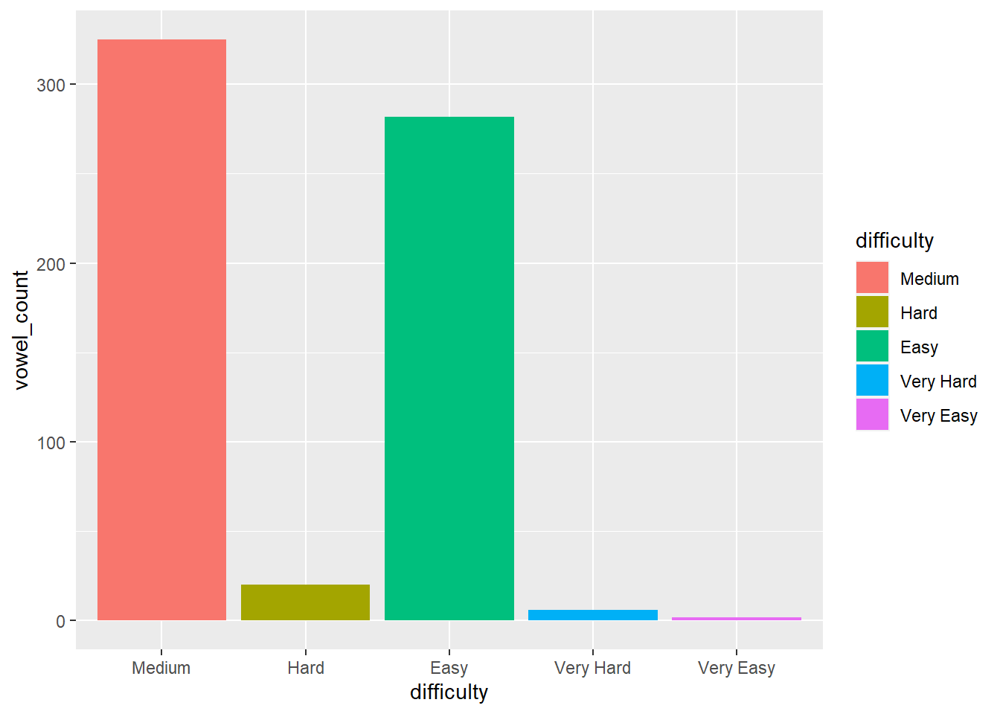
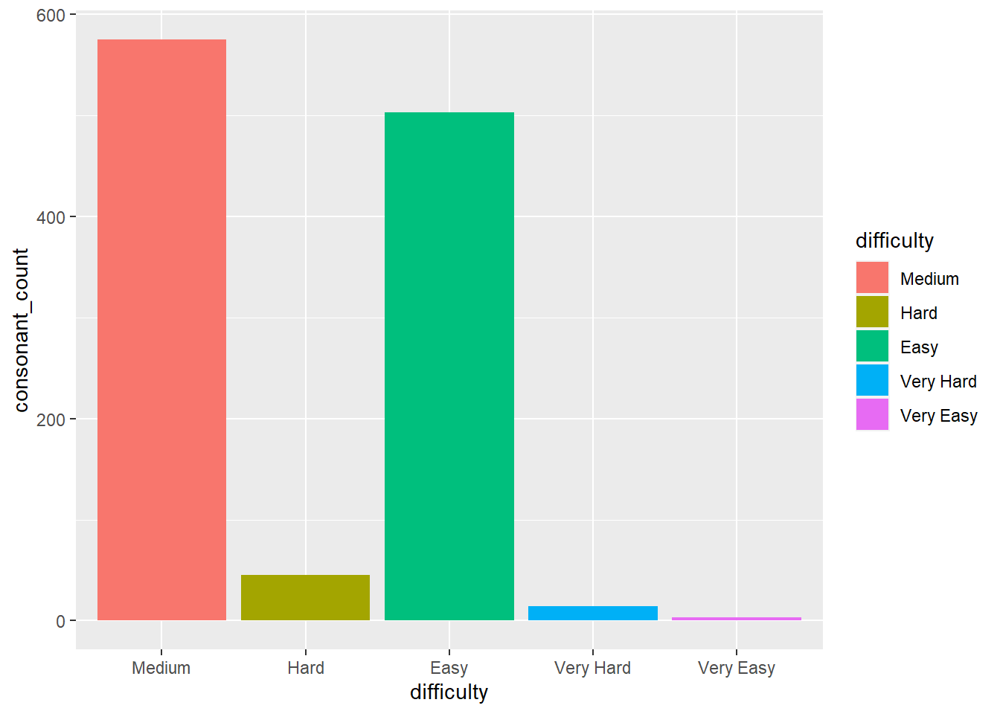
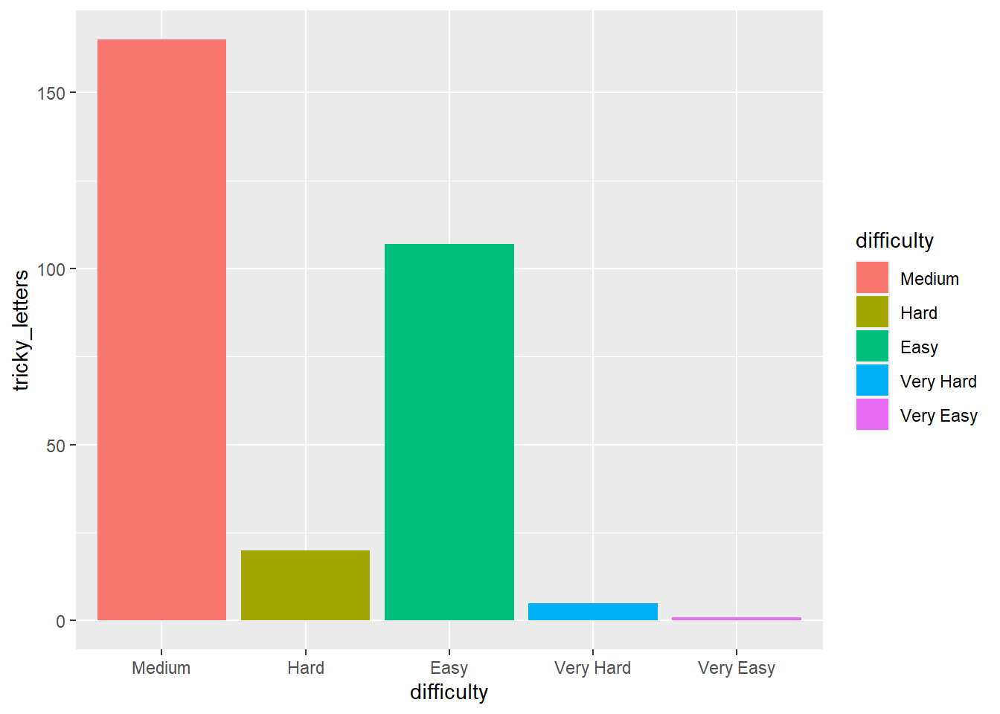
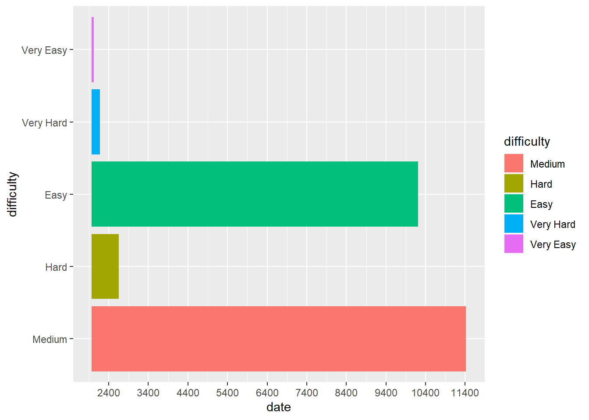

data<-read_excel("Problem_C_Data_Wordle.xlsx", skip=1) %>%
clean_names()
#Removing words that arent
data<-data %>%
filter(word != "rprobe") %>%
filter(word != "clen") %>%
filter(word != "tash") %>%
filter(word != "marxh")MCM Project
Importing Libraries
Importing Data
Exploratory Analysis
#Visualizing Relationships
#Comparing Date to number of people that participate
data %>%
ggplot(aes(x=date, y=number_of_reported_results))+
geom_point()
#Are people getting better
data %>%
ggplot(aes(x=date, y=data$x7_or_more_tries_x))+
geom_point()Warning: Use of `data$x7_or_more_tries_x` is discouraged.
i Use `x7_or_more_tries_x` instead.
#Are more people trying hard mode
data %>%
ggplot(aes(x=date, y=data$number_in_hard_mode))+
geom_point()Warning: Use of `data$number_in_hard_mode` is discouraged.
i Use `number_in_hard_mode` instead.
#First attempt Guesses over time
data %>%
ggplot(aes(x=date, y=data$x1_try))+
geom_point()Warning: Use of `data$x1_try` is discouraged.
i Use `x1_try` instead.
Problem 1: Predicting number of players
This needs to be a regression model. This data is in no way linear so the first attempt is to create a nonlinear regression method.
#Creating Data splits
set.seed(1234)
split<-initial_split(data, prop = .9)
training_data<-training(split)
test_data<-testing(split)
#The Future Date we want to predict the participants for
future_date<-data_frame(date = as.Date(x = "2023/3/1"),
contest_number = 620)Warning: `data_frame()` was deprecated in tibble 1.1.0.
i Please use `tibble()` instead.Basic Decision Tree
#Tuned Model
tuned_reg_tree<-decision_tree(mode = "regression", engine = "rpart", cost_complexity = 0.0005623413, tree_depth = 11, min_n = 2)Boosted Tree
#Updating Workflow with Tuned Model and Fitting it to Training Data
tuned_reg_xgb<-boost_tree(mode = "regression", engine = "xgboost",mtry = 2, trees = 1000, min_n = 13, tree_depth = 6, learn_rate = 0.01872842, loss_reduction = 1.647096, sample_size = 0.9797893)Support Vector Machine Regression
#Updating Workflow with Tuned Model and Fitting it to Training Data
tuned_svm<-svm_rbf(mode = "regression", engine = "kernlab", cost = 32, rbf_sigma = 1, margin = 0.1)Comparing Regressions
Storing Tuned Models
difficulty<-c()
for (i in 1:nrow(data)){
current_row=data[i,]
#Determining the difficulty of this word
if (((current_row$x1_try + current_row$x2_tries + current_row$x3_tries) >
(current_row$x3_tries + current_row$x4_tries)) && ((current_row$x1_try + current_row$x2_tries + current_row$x3_tries) >
(current_row$x4_tries + current_row$x5_tries)) && ((current_row$x1_try + current_row$x2_tries + current_row$x3_tries) >
(current_row$x5_tries + current_row$x6_tries)) && ((current_row$x1_try + current_row$x2_tries + current_row$x3_tries) >
(current_row$x6_tries + current_row$x7_or_more_tries_x))){
difficulty[i]<- "Very Easy"
}else if (((current_row$x3_tries + current_row$x4_tries) >
(current_row$x1_try + current_row$x2_tries + current_row$x3_tries)) && ((current_row$x3_tries + current_row$x4_tries) >
(current_row$x4_tries + current_row$x5_tries)) && ((current_row$x3_tries + current_row$x4_tries) >
(current_row$x5_tries + current_row$x6_tries)) && ((current_row$x3_tries + current_row$x4_tries) >
(current_row$x6_tries + current_row$x7_or_more_tries_x))){
difficulty[i]<- "Easy"
}else if (((current_row$x4_tries + current_row$x5_tries) >
(current_row$x1_try + current_row$x2_tries + current_row$x3_tries))== TRUE && ((current_row$x4_tries + current_row$x5_tries) >
(current_row$x3_tries + current_row$x4_tries))== TRUE && ((current_row$x4_tries + current_row$x5_tries) >
(current_row$x5_tries + current_row$x6_tries))== TRUE && ((current_row$x4_tries + current_row$x5_tries) >
(current_row$x6_tries + current_row$x7_or_more_tries_x))== TRUE){
difficulty[i]= "Medium"
}else if (((current_row$x5_tries + current_row$x6_tries) >
(current_row$x1_try + current_row$x2_tries + current_row$x3_tries)) && ((current_row$x5_tries + current_row$x5_tries) >
(current_row$x3_tries + current_row$x4_tries)) && ((current_row$x5_tries + current_row$x6_tries) >
(current_row$x4_tries + current_row$x5_tries)) && ((current_row$x5_tries + current_row$x6_tries) >
(current_row$x6_tries + current_row$x7_or_more_tries_x))){
difficulty[i]<- "Hard"
}else if (((current_row$x6_tries + current_row$x7_or_more_tries_x) >
(current_row$x1_try + current_row$x2_tries + current_row$x3_tries)) && ((current_row$x6_tries + current_row$x7_or_more_tries_x) >
(current_row$x3_tries + current_row$x4_tries)) && ((current_row$x6_tries + current_row$x7_or_more_tries_x) >
(current_row$x4_tries + current_row$x5_tries)) && ((current_row$x6_tries + current_row$x7_or_more_tries_x) >
(current_row$x5_tries + current_row$x6_tries))){
difficulty[i]<- "Very Hard"
}else {difficulty[i]<-NA}
}
difficulty<-as_tibble(difficulty)
data$difficulty<-difficulty$value#Vowel Counting Function
get_vowel_count <- function(phrase) {
counter <- 0
for (i in unlist(strsplit(phrase, ""))) {
if ( i %in% c("a", "e", "i", "o", "u")) {
counter <- counter + 1
}
}
counter
}
data %>%
filter(difficulty == "vh" | difficulty == "h") # A tibble: 0 x 13
# ... with 13 variables: date <dttm>, contest_number <dbl>, word <chr>,
# number_of_reported_results <dbl>, number_in_hard_mode <dbl>, x1_try <dbl>,
# x2_tries <dbl>, x3_tries <dbl>, x4_tries <dbl>, x5_tries <dbl>,
# x6_tries <dbl>, x7_or_more_tries_x <dbl>, difficulty <chr>#Counting Vowels for every word
vowels<-c()
counter<-0
for (i in 1:nrow(data)){
current_word = data$word[i]
#print(current_word)
vowels[i]<- get_vowel_count(current_word)
#print(get_vowel_count(current_word))
}
data$vowel_count<-vowels
#Counting Number of consonants
data$consonant_count<-5-data$vowel_count
#Creating tricky letter function
get_tricky_letter_count <- function(phrase) {
counter <- 0
for (i in unlist(strsplit(phrase, ""))) {
if ( i %in% c("r", "u", "w", "z", "x", "y")) {
counter <- counter + 1
}
}
counter
}
#Counting tricky letters
tricky_letters<-c()
for (i in 1:nrow(data)){
current_word = data$word[i]
#print(current_word)
tricky_letters[i]<- get_tricky_letter_count(current_word)
#print(get_tricky_letter_count(current_word))
}
data$tricky_letters<-tricky_letters
#Creating a function for counting letters
get_letter_count <- function(phrase) {
letters<- as.vector(strsplit(phrase, ""))
counter <- c()
for (i in letters) {
count <- str_count(phrase, i)
counter[i]<-count
}
max(counter)
}
#Counting the number of occurances of each letter
max_repeats<-c()
for (i in 1:nrow(data)){
current_word = data$word[i]
#print(current_word)
max_repeats[i]<- get_letter_count(current_word)
#print(get_tricky_letter_count(current_word))
}
data$max_repeats<-max_repeats#Checking which words dont have a difficulty
data$difficulty[data$word == "elder"]<- "Hard"
data$difficulty[data$word == "naïve" | data$word == "spell" | data$word == "berth"| data$word == "retro"| data$word == "girth"| data$word == "cater"| data$word == "mince"]<-"Medium"
#Making Difficulty a factor
data$difficulty<-as.factor(data$difficulty)EDA for Comparing Difficulties
data %>%
group_by(difficulty) %>%
count# A tibble: 5 x 2
# Groups: difficulty [5]
difficulty n
<fct> <int>
1 Easy 157
2 Hard 13
3 Medium 180
4 Very Easy 1
5 Very Hard 4#Assess the vowel count over different difficulties
data %>%
ggplot(aes(x=difficulty, y=vowel_count))+
geom_col(aes(fill = difficulty))
#Assessing Consonant Count Across Difficulties
data %>%
ggplot(aes(x=difficulty, y=consonant_count))+
geom_col(aes(fill = difficulty))
#Assessing Tricky Letter Count Across Difficulties
data %>%
ggplot(aes(x=difficulty, y=tricky_letters))+
geom_col(aes(fill = difficulty))
#Assessing Letter Repetition Across Difficulties
data %>%
ggplot(aes(x=difficulty, y=max_repeats))+
geom_col(aes(fill = difficulty))
#Assessing Difficulty Over Time
data %>%
ggplot(aes(x=date, y=difficulty))+
geom_col(aes(fill = difficulty))
Decision for Classifying Difficulty
#Creating Data splits
set.seed(1234)
split<-initial_split(data, prop = .9)
training_data<-training(split)
test_data<-testing(split)
#The Future Date we want to predict the participants for
future_word<-data_frame(word = "eerie", vowel_count = 4, consonant_count =1, tricky_letters = 0, max_repeats = 3)#Decision Tree #
#tree_model<-decision_tree(mode = "classification",
# engine = "rpart",
# cost_complexity = tune(),
# tree_depth = tune(),
# min_n = tune())
#tree_wf<-workflow() %>%
# add_model(tree_model) %>%
# add_formula(difficulty ~ word + vowel_count + consonant_count + tricky_letters + max_repeats)
#folds<-vfold_cv(training_data)
#tree_tuning_grid<-grid_regular(cost_complexity(), tree_depth(), min_n(), levels = 5)
#tree_res<-tree_wf %>%
# tune_grid(resamples = folds,
# grid = tree_tuning_grid)
#best_tree_params<-tree_res %>% select_best("rmse")#Accessing model Accuracy
#tuned_tree<-finalize_model(tree_model, best_tree_params)
#tree_wf<-tree_wf %>% update_model(tuned_tree) %>% fit(training_data)
#tree_preds<-predict(tree_wf, test_data)
#tree_acc<-mean(tree_preds == test_data$difficulty)
#Predicting "eerie" difficulty
#predict(tree_wf, future_word)Boosted Tree Classification
# Boosted Tree #
#xgb_classification<-boost_tree(mode = "classification", engine = "xgboost", mtry = tune(), trees = 1000, min_n = tune(), tree_depth = tune(), learn_rate = tune(), loss_reduction = tune(),sample_size = tune(), stop_iter = tune())
#xgb_wf<- workflow() %>%
# add_model(xgb_classification) %>%
# add_formula(difficulty ~ word + vowel_count + consonant_count + tricky_letters + max_repeats)
#folds<-vfold_cv(training_data)
#xgb_grid <- grid_latin_hypercube(
# tree_depth(),
# min_n(),
# loss_reduction(),
# sample_size = sample_prop(),
# finalize(mtry(), training_data),
# learn_rate(),
# stop_iter(),
# size = 30
#)
#xgb_res<- xgb_wf %>%
# tune_grid(resample = folds, grid = xgb_grid, control = control_grid(save_pred = TRUE))
#best_xgb_params<- select_best(xgb_res, "accuracy")